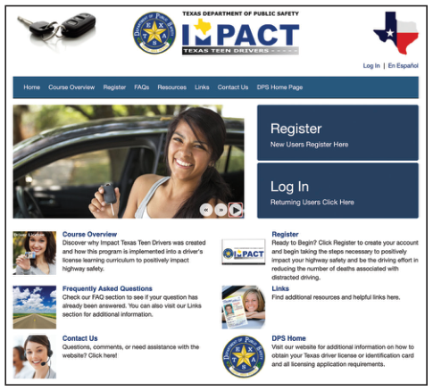
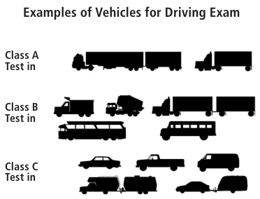

Who May Drive a Motor Vehicle in Texas?
Individuals who meet the following criteria may drive a motor vehicle in Texas.
Residents:
- Texas residents who have a valid Texas driver license
- New residents who are exchanging a valid out-of-state license have 90 days to establish residency in Texas in order to secure a Texas driver license.
- Any person, while driving or operating any road machine, farm tractor, or implement of husbandry temporarily operated or moved on a highway is exempt from having a Texas license, unless the vehicle is a commercial motor vehicle
Nonresidents:
- Any nonresident who is at least 16 years of age and possesses a valid driver license issued in the nonresident’s home state or Canadian province. Nonresidents at least 16 years of age who meet these criteria may drive a vehicle permitted to be operated with a Class C or Class M driver license in Texas
- Nonresidents who are at least 18 years of age may drive any vehicle in Texas if they are legally licensed to drive such a vehicle in their home state or country, and the home state or country grants like recognition (reciprocity) to citizens of Texas
Military:
- The driver of an official U.S. or state military service motor vehicle may drive a vehicle without a valid Texas driver license, unless the vehicle is a commercial motor vehicle
- A nonresident on active duty in the U.S. armed forces, the member’s spouse, or dependent child who has a valid license issued by his/her home state
- Any person on active military duty who holds a valid driver license issued by the U.S. armed forces in a foreign country may drive a motor vehicle in Texas for 90 days from the date of their return to the U.S.
-
Unless a license is suspended, cancelled, revoked or denied, a Texas driver license held by any person who enters or who is in the U.S. armed forces will remain valid as long as the:
- Service continues; and
- Person remains absent from Texas and the absence does not exceed 90 days from the date the licensee is honorably separated from service or returns to Texas
Special Note: You may not receive a Texas driver license until all valid driver licenses and IDs issued are surrendered.
Types of Texas Driver Licenses
Learner License (Instruction Permit)
A learner license, also known as an instruction permit, allows a student driver to legally practice driving when accompanied by a licensed driver. The licensed driver must be at least 21 years of age with at least one year of driving experience, must occupy the seat beside the driver, and cannot be intoxicated, asleep, or engaging in any activity that prevents observation and response to the actions of the driver. A learner license will indicate “Learner License” on the front of the card and expire on the minor’s 18th birthday. A person applying for a learner license must:
- Be at least 15 but no more than 18 years of age
- Complete the classroom portion of a driver education course, vision exam, and knowledge exam
- Meet all other requirements for a first time driver license (original) applicant
| Minimum Age | Fee* | Expiration |
|---|---|---|
| 15 with driver education | $15 for license + $1 fee = $16 | For applicants less than 18 years of age, the license expires on their 18th birthday |
| * A $1 administrative fee is included in most transactions. However, if you are completing multiple transactions at the same time, either in-person, telephone or online, then you will only be charged the $1 administrative fee once. A $1 administrative fee is not charged for transactions made through the mail. | ||
Applicants 18 years of age and older who wish to legally practice driving are issued a Class C license with the same restrictions as a learner license. The license is generally valid for eight years and costs $32 plus a $1 administrative fee.
Verification of Enrollment and Attendance (VOE) Form
If you are under 18 years of age and applying for your first Texas driver license, learner license, or provisional license, you must provide evidence that you:
- Have obtained a high school diploma or its equivalent; or
- Are a student enrolled in a public, private, or home school and attended school for at least 80 days in the fall or spring semester preceding the date of application; or
- Have been enrolled for at least 45 days and are enrolled at the time of application in a program to prepare individuals to pass the high school equivalency exam.
This information is included on the Verification of Enrollment and Attendance (VOE) form issued by your school. Ask your school officials to complete and sign the VOE form. The VOE may not be dated more than 30 days before the date of application for a license during the school year or more than 90 days during the summer. The VOE must be presented to the license and permit specialist (LPS) when applying for an original or first time license.
Hardship License
A hardship license (previously known as Minor Restricted Driver License or MRDL) may be issued to a minor who establishes the necessity to drive and may have restrictions based on the qualifying hardship.
An application for a hardship license (DL-77) must be executed by an authorized adult on behalf of the minor. Both the adult and the minor must sign the form and present it in person at the driver license office. Only a parent, guardian, or person having custody of a minor may apply on behalf of a minor. If the minor does not have a parent, guardian, or custodian, then an employer or county judge may apply on behalf of the minor.
A person applying for a hardship license must:
- Be at least 15 years of age but not more than 18
- Complete and pass a driver education course (a driver education course includes both the classroom and behind the wheel phase), vision, knowledge, and driving exams
- Meet all other requirements for a first-time driver license (original) applicant.
For more information, please visit our website, https://www.dps.texas.gov/DriverLicense/teenDriver.htm.
DPS may require supporting documentation or conduct an investigation to confirm the information provided on the application.
DPS will issue a hardship license if it is determined that:
- Failure to issue the hardship license will result in an unusual economic hardship for the family of the minor applicant
- The hardship license is necessary due to an illness, disability, or death of a family member
- The hardship license is necessary because the minor applicant is enrolled in a vocational education program that requires a license for participation
- A court order requiring the issuance of the hardship license is presented
Graduated Driver License (GDL)
Teenagers and young adults have the highest crash rates of all drivers, and motor vehicle crashes are the leading cause of death for U.S. teens. Young drivers make up 6.5 percent of the driving population but are responsible for 13 percent of fatal crashes. The Graduated Driver License (GDL) program eases teens into the driving experience by phasing in driving privileges and minimizing exposure to high-risk situations.
The GDL program applies to driver license applicants under 18 years of age and has contributed to a decrease in fatal crashes. As a part of this program, all new driver license applicants are required to pass a driving exam conducted at a driver license office or authorized testing facility.
The GDL program consists of two phases. Phase One applies to learner licenses. Phase Two applies to provisional licenses. All drivers less than 18 years of age must meet the licensing requirements for a learner license or provisional license, but they are also subject to additional requirements, including driver education and the GDL program.
Phase One: This phase requires applicants under 18 years of age to hold a valid learner, hardship, or combination of learner and hardship license for a minimum of six months prior to the issuance of a provisional license.
If your license is suspended during Phase One, then the initial six-month period is extended by the number of days of the suspension because your license is invalid during the suspension period.
A Texas learner license will be issued to new Texas residents who are at least 15 years of age, present an out-of-state instruction permit, and submit a VOE form. A Texas learner license must be held for six months from the date of issuance before the individual is eligible for Phase Two.
Phase One requirements do not apply to Class M (motorcycle) licenses. Under the GDL program, there is no minimum time a person must hold a restricted motorcycle license before applying for a Class M license.
Phase Two: Phase Two restricts the driving privileges of individuals until their 18th birthday following the issuance of a provisional license.
During Phase, Two these individuals may not drive a motor vehicle:
- With more than one passenger in the vehicle under the age of 21 who is not a family member
- Between midnight and 5:00 a.m. unless the operation of the vehicle is necessary for the driver to work, to attend or participate in a school-related activity, or due to a medical emergency
All drivers who are under 18 years of age are restricted from using a wireless communication device, including a hands-free device, except in case of an emergency.
Provisional License
A provisional license is a driver license issued to persons 16 to 18 years of age that has the Phase Two GDL driving restrictions applied. The license will be marked “PROVISIONAL” and expire on the license holder’s 18th birthday. A person applying for a provisional license must:
- Be at least 16 but not more than 18 years of age
- Complete and pass a driver education course (a driver education course includes both the classroom and behind the wheel phases), vision, and driving exams
- Have held a valid learner, hardship, or combination of learner and hardship license for at least six months
- Meet all other requirements for a renewal driver license applicant
Out-of-State License Holders
Applicants who are at least 15 but less than 18 years of age and present a valid out-of-state instruction permit will be issued a Phase One learner license. Applicants who are at least 16 but less than 18 years of age and present a valid out-of-state driver license will be issued a Phase Two provisional license with passenger and time restrictions after successful completion of the driving exam. Applicants must meet all other requirements for a first-time (original) applicant.
All licenses issued to persons less than 21 years of age will be marked “UNDER 21”.
Classes of Driver Licenses
Class A, B, C, and M driver licenses are issued to individuals who are exempt from obtaining or not required to obtain a commercial driver license (CDL). Most non-commercial driver licenses issued to persons 18 years of age and older are valid for eight years and cost $32 (a $1 administrative fee will be added to in-person , telephone and online transactions). Some applicants receive licenses with shorter terms due to restrictions including, but not limited to, verification of lawful presence, sex offender registration requirements, or being 85 years of age or older.
Individuals who operate any of the following vehicles are exempt from obtaining a CDL but may need a Class A or Class B non-commercial driver license because the type of vehicle driven still meets the definition of a commercial motor vehicle. For more information on commercial motor vehicles and requirements for a CDL, please visit our website, http://www.dps.texas.gov/DriverLicense/CommercialLicense.htm or see the Texas Commercial Motor Vehicle Drivers Handbook. You may download the handbook online at http://www.dps.texas.gov/internetforms/Forms/DL-7C.pdf.
- A fire-fighting or emergency vehicle necessary for the preservation of life or property or the execution of emergency governmental functions whether operated by an employee of a political subdivision or by a volunteer firefighter.
- A military vehicle or a commercial motor vehicle when operated for military purposes by military personnel, members of the Reserves and National Guard on active duty, including personnel on full-time National Guard duty, personnel on part-time training, and National Guard military technicians.
- A recreational vehicle driven for personal use.
- A vehicle that is owned, leased, or controlled by an air carrier and is driven or operated exclusively by an employee of the air carrier only on the premises of an airport, on service roads to which the public does not have access.
- A vehicle used exclusively to transport seed cotton modules or cotton burrs.
- A former military vehicle as defined by Texas Transportation Code 504.402(i) that is operated intrastate and not driven by an individual for compensation or in furtherance of a commercial enterprise.
- A covered farm vehicle as defined by 49 CFR Section 390.5 that is used to transport agricultural commodities, livestock, machinery or supplies to or from a farm or ranch, not used in for-hire motor carrier operations and if under 26,001 pounds is operated anywhere in the United States and if over 26,001 pounds is operated within 150 miles of the farm or ranch.
-
A vehicle controlled and operated by a farmer:
- Used to transport agricultural products, farm machinery, or farm supplies to or from a farm
- Not used in the operation of a common or contract motor carrier, or
- Used within 150 miles of the person’s farm.
Class A Driver License
A Class A driver license permits a person to drive:
- Any vehicle or combination of vehicles described under a Class B or Class C driver license; and
- A vehicle or combination of vehicles with a gross combination weight rating (GCWR) of 26,001 lbs. or more, provided the gross vehicle weight rating (GVWR) of the vehicle(s) towed is in excess of 10,000 lbs.
A Class A driver license does not permit a person to drive a motorcycle.
| Minimum Age | Fee* | Expiration |
|---|---|---|
| 18 or older (Applicants 18 to 24 are required to successfully complete an approved driver education course.) | $32 for license + $1 fee = $33 | Eight years |
| 17 with completion of an approved driver education course | $15 for license + $1 fee = $16 | On applicant’s next birthday |
| * A $1 administrative fee is included in most transactions. However, if you are completing multiple transactions at the same time, in-person, telephone and online, then you will only be charged the $1 administrative fee once. A $1 administrative fee is not charged for transactions made through the mail. | ||
Class B Driver License
A Class B driver license permits a person to drive:
- Any vehicle included in Class C;
- A single vehicle with a gross vehicle weight rating (GVWR) of 26,001 lbs. or more and any such vehicle towing either a vehicle with a GVWR that does not exceed 10,000 lbs. or a farm trailer with a GVWR that does not exceed 20,000 lbs.; and
A Class B driver license does not permit a person to drive a motorcycle.
| Minimum Age | Fee* | Expiration |
|---|---|---|
| 18 or older (Applicants 18 to 24 are required to successfully complete an approved driver education course.) | $32 for license + $1 fee = $33 | Eight years |
| 17 with completion of an approved driver education course | $15 for license + $1 fee = $16 | On applicant’s next birthday |
| * A $1 administrative fee is included in most transactions. However, if you are completing multiple transactions at the same time, in-person, telephone and online, then you will only be charged the $1 administrative fee once. A $1 administrative fee is not charged for transactions made through the mail. | ||
Class C Driver License
- A single vehicle or combination of vehicles that are not included in Class A or Class B and
- A single vehicle with a gross vehicle weight rating (GVWR) of less than 26,001 lbs. towing a trailer not to exceed 10,000 lbs. GVWR or a farm trailer with a GVWR that does not exceed 20,000 lbs.
-
An autocycle, defined as a motor vehicle, other than a tractor, that is:
- Designed to not have more than three wheels on the ground when moving
- Equipped with a steering wheel
- Equipped with seats that do not require the operator to straddle or sit astride the seat
- Manufactured and certified to comply with federal safety requirements for a motorcycle
A Class C driver license does not permit a person to drive a motorcycle.
| Minimum Age | Fee* | Expiration |
|---|---|---|
| 18 or older (Applicants 18 to 24 are required to successfully complete an approved driver education course.) | $32 for license + $1 fee = $33 | Eight years |
| 16 with completion of an approved driver education course | $15 for license + $1 fee = $16 | On applicant’s 18th birthday |
| 15 with the approval of a hardship license | $ 5 for license + $1 fee = $6 | On applicant’s next birthday |
| * A $1 administrative fee is included in most transactions. However, if you are completing multiple transactions at the same time either, in-person or online, then you will only be charged the $1 administrative fee once. A $1 administrative fee is not charged for transactions made through the mail. | ||
Class M Driver License
A Class M driver license permits a person to drive a motorcycle. Before applying for a Class M license, you must pass a state approved motorcycle operator training course. Motorcycle training course providers require drivers who are less than 18 years of age to present proof of completion of the classroom phase of a driver education course, hold a learner license (issued after completing the classroom phase of a driver education course), or hold a valid Class C license prior to enrolling in a motorcycle operator training course.
Minimum Age
Motorcycle: 16 with completion of the classroom phase of a driver education course (32 hours) and a state approved motorcycle operator training course (16 hours).
Motorcycle of 250 cc or less: 15 years of age with DPS approval for a hardship driver license or completion of the classroom phase of a driver education course (32 hours) and a state approved motorcycle operator training course (16 hours).
For more information on Class M driver licenses, please visit our website, https://www.dps.texas.gov/DriverLicense/motorcycleLicense.htm
| Type | Amount | Expiration |
|---|---|---|
| 18 and older | $32 for license + $1 administrative fee = $33 | Eight years |
| Under 18 | $15 for license + $1 administrative fee = $16 | On applicant’s 18th birthday |
| Add M | Add M to current license requires a $15 exam fee + $1 administrative fee = $16 | Expires with license |
| Renewal | An additional $11 is required when renewing a Class M license + $1 administrative fee = $12 | Expires with license |
| * A $1 administrative fee is included in most transactions. However, if you are completing multiple transactions at the same time, in-person, telephone and online, then you will only be charged the $1 administrative fee once. A $1 administrative fee is not charged for transactions made through the mail. | ||
Fees and Driver Licenses for Veterans
Veterans who are honorably discharged and receive compensation for a service-related disability of at least 60 percent are exempt from paying driver license and ID card fees. Individuals applying for a CDL or who are required to register as a sex offender are not eligible for this fee exemption. The veteran must meet all other licensing requirements.
Designation on Driver License
DPS offers Veteran and Disabled Veteran designators with branch of service indicators on the face of the driver license and identification card (ID) for qualifying veterans. For more information on the veteran designations, visit our website at www.dps.texas.gov/DriverLicense/vetServices.htm.
Identification (ID) Cards
In addition to driver licenses, DPS issues ID cards with a photograph of the applicant. ID cards have a distinguishing number similar to a driver license and are maintained in the driver record file. ID cards are displayed in a vertical format for individuals who are younger than 21 years of age and are horizontal for individuals who are 21 years of age and older. Applicants must provide documents in accordance with DPS ID card policy requirements. For a list of acceptable documents to obtain an ID card, visit our website, http://www.dps.texas.gov/DriverLicense/applyforID.htm
| Minimum Age | Fee* | Expiration |
|---|---|---|
| ID cards can be issued to any person of any age. Anyone under the age of 21 will have “Under 21” printed on the card. | $15 card + $1 fee = $16 (59 or younger) | Six years |
| $5 card + $1 fee = $6 (60 or older) | ||
| * A $1 administrative fee is included in most transactions. However, if you are completing multiple transactions at the same time in-person, telephone and online then you will only be charged the $1 administrative fee once. A $1 administrative fee is not charged for transactions made through the mail. | ||
Medical and Emergency Information
On the reverse side of the card, state law requires DPS to print the statement “Directive to physician has been filed at telephone #” and “Emergency contact number.” Space is provided on the surface for the license holder to write a telephone number.
Space is also provided on the card to allow individuals to voluntarily indicate if a health condition exists that may impede communication with a peace officer.
Additionally, an application for an original, renewal or replacement driver license or ID includes the option to provide the name, address and telephone number of two individuals who may be contacted in the event of injury or death of the applicant. Driver license and ID card holders may also add or update emergency contacting information online by visiting our website, https://www.dps.texas.gov/DriverLicense/emerContactInfo.htm.
Allergic Reaction to Drugs
DPS does not print medical information on driver licenses or ID cards. To add medical information to the back of your driver license or ID card, use a permanent ink pen and write the name of medication that may cause an allergic reaction.
Organ Donation
DPS offers “Donate Life Texas” pamphlets to any person who visits a driver license office. The pamphlets provide general information on the Donate Life Texas program. If you choose to be an organ donor, a small heart with the word “donor” will be printed on the front of the card. Cards that indicate a person’s wish to be a donor shall be conclusive evidence of a decedent’s status as a donor and serve as consent for organ, tissue, and eye donation. You can get more information and register to be an organ, tissue, and eye donor online at www.DonateLifeTexas.org.
Voluntary Contributions
If you are applying for an original or renewal driver license or ID card, you can voluntarily make a monetary contribution to the following programs:
- The Blindness Education, Screening, and Treatment Program administered by the Texas Commission for the Blind, which provides screening and treatment for those individuals who are without adequate medical coverage.
- The Glenda Dawson Donate Life Texas Program, which manages the donor registry and statewide donor education projects.
- The Veteran’s Assistance Fund, which provides grants to local government and nonprofit organizations to enhance or improve veteran assistance programs that address the needs of veterans and their families.
- The Sexual Assault Evidence Testing Program, which helps fund the testing of sexual assault evidence (rape) collection kits.
- The Identification Fee Exemption Account, which assists foster and homeless children and youths with payment of fees for driver licenses and IDs.
How to Obtain a Texas Driver License
If you are applying for a Texas driver license, you must comply with the following procedures.
Applying for a Texas Driver License
An application for a driver license must be made in person. You may obtain an application at any driver license office or download an application from our website at www.dps.texas.gov/DriverLicense/ApplyforLicense.htm.
All in-office applicants who are at least 17 years and 10 months old are provided the opportunity to complete a voter registration application.
All men 18-25 years of age who are U.S. citizens or immigrants are automatically registered for selective service upon issuance of an ID card or driver license.
Required Documents and Application Information
To apply for a Texas driver license, you must provide the following documents and information.
- Your full name, proof of residential address, mailing address, current county of residence, place of birth, and date of birth
- Identification documents
- Social security number verified electronically through the Social Security Administration
- Thumb or index fingerprints
- Physical description
- Answer the medical status and history questions listed on the application. Individuals with certain medical limitations may have their cases reviewed by the Medical Advisory Board (MAB) before the license is issued
- Surrender any valid out-of-state driver license
- U.S. citizenship status or lawful presence
For additional information and lists of acceptable documents, visit our website, www.dps.texas.gov/DriverLicense/ApplyforLicense.htm.
Driver Record
A complete record of all your examinations will be recorded on your application and scanned into the Driver License System where it becomes a part of your permanent driving record. Any convictions for moving traffic violations or crashes, including out of state records of convictions, will be recorded as part of your permanent driving record. To find out more information on driver records and how to obtain a copy of your record, visit http://www.dps.texas.gov/DriverLicense/driverrecords.htm.
Evidence of Financial Responsibility (Vehicle Insurance)
When applying for an original driver license, you must provide evidence of financial responsibility or a statement that you do not own a motor vehicle that requires the maintenance of financial responsibility.
Evidence of financial responsibility must meet at least the minimum amount required by Texas and cover each motor vehicle the applicant owns that requires maintenance of financial responsibility.
Vehicle Registration
When surrendering an out-of-state driver license, a new Texas resident must submit, with a driver license application, evidence that each motor vehicle owned by the person is currently registered in Texas, or indicate they do not own a motor vehicle required to be registered. A registration receipt issued by the county tax assessor-collector of the county in which the new resident resides is satisfactory evidence that your motor vehicle has been registered in Texas.
Fees
The required fee(s) must be submitted before any exams will be given for an original Texas driver license. An additional $1 administrative fee is included in most transactions. However, if you are completing multiple transactions at the same time, in-person, by telephone or online, you will only be charged the $1 administrative fee once. A $1 administrative fee is not charged for transactions made through the mail.
For more information on all fees, refer to Appendix D of this handbook or visit our website, https://www.dps.texas.gov/section/driver-license/driver-license-fees.
Driver Education
Individuals younger than 25 years of age are required to successfully complete an approved driver education course. For more information on licensing requirements for applicants younger than 25 years of age, visit our website at www.dps.texas.gov/DriverLicense/ApplyforLicense.htm.

Impact Texas Drivers (ITD)
All driver license applicants must complete the Impact Texas Drivers (ITD) course appropriate for their age group prior to taking the driving exam. For more information, visit the ITD website, https://impacttexasdrivers.dps.texas.gov.
Minors
If you are younger than 18 years of age, your application must be signed, under oath, by the parent or guardian with custody. If there is not a guardian, your employer or county judge may sign the application. The person who signs may ask DPS to cancel your license any time before your 18th birthday. This request must be in writing and sworn to before an officer authorized to administer oaths. In addition, the minor applicant and cosigner must acknowledge receipt of information that provides information about distracted driving and explains the zero tolerance law. See Chapter 10: Alcohol and Drugs Impact on the Driving Ability for more information.
Examinations
Before any exams are given, you must pay the required fee. Your picture will be taken and you will be given a payment receipt. If you do not pass the knowledge and driving exams on your first attempt, your application will be held for 90 days. After 90 days or three failed exams, a new application and fee will be required.
The knowledge and driving exams are not required for applicants 18 years of age and older who surrender a valid out-of-state license. After you have passed all applicable exams, you will be issued a temporary license, which you may use for 45 days or until you receive your permanent license in the mail. If you do not receive your license in 45 days, email our customer service center at https://www.dps.texas.gov/DriverLicense/customer_service/Other.aspx.
Part 1: The Knowledge exam
As part of the Less Tears More Years Act, all applicants younger than 25 years of age are required to take a driver education course to apply for a driver license. Upon successful completion of certain courses, the person is not required to take the Class C knowledge exam, also known as the written exam, at the driver license office.
There are three types of knowledge exams.
- Class C – Knowledge exam for all original applicants
- Class M – Motorcycle knowledge exam. This exam is waived for applicants who successfully complete a state approved motorcycle operator training course and present proof of completion.
- Class A or Class B – Rules exam for operators of Class A and Class B vehicles
You must score a grade of 70 percent or better to pass any knowledge exam.
Part 2: The Vision Examination
Your vision will be examined when you are at the driver license office. Depending on the results, you may be required to wear corrective lenses while driving if the lenses improve your vision and help increase the safety of your driving. If the results are inconclusive, you may be referred to your doctor.
Part 3: The Driving Exam
The driving exam is given only after all other exams are passed and evidence of financial responsibility is presented or the vehicle is exempt under the Texas Motor Vehicle Safety Responsibility Act. The type of vehicle used for the driving exam must match the class of license on the application. No one younger than 18 years of age is exempt from taking the driving exam.

Examples of Vehicles for Driving Exam · Class A Test in · Class B Test in · Class C Test in
Individuals may take a driving exam at a driver license office or through a third party skills testing (TPST) school. The TPST program permits certain schools to administer the non-commercial driving exam.
Individuals who complete the state approved motorcycle operator training course are not required to take a driving exam for a Class M license if the person already has a valid, unrestricted Texas license. Individuals younger than 18 years of age must pass the motorcycle driving exam.
Additionally, the driving exam is not required for anyone applying for a learner license.
A $10 exam fee is required when changing from a lower to a higher class license or when removing restrictions from a license. The cost of adding a Class M to an existing license is $15.
Description of the Driving Exam
During the driving exam, you will not be asked to do anything illegal. You must follow all of the instructions given by the LPS. Do not carry on a conversation during the driving exam.
If you are not eligible to drive in Texas, a licensed driver must drive the car to the driver license office and exam area. If you are not issued a driver license then the licensed driver must also drive you away from the driver license office.
Upon completion of the driving exam, the LPS will explain all driving errors and let you know how to correct those errors.
Your application for a license will not be approved if you:
- Violate the law
- Refuse to follow instructions
- Drive dangerously or have a crash
- Have more than 30 points deducted on the driving exam
All drivers are graded on four basic skills, regardless of the type of driving exam.
- Control – Your ability to make your car do what you want it to do
- Observation – Your ability to see what other traffic is doing and other things that may create problems in traffic
- Positioning – Your ability to drive in your lane
- Signaling – Your ability to use turn signals as required
You may be graded on your performance on the following skills so it is good to practice before taking the driving exam.
- Parallel parking (you may use the back-up camera on your vehicle for parallel parking; however, the use of an automated vehicle parking function will not be allowed)
- Quick stop – You may be asked to stop your car as quickly as possible at about 20 mph without skidding your tires
- Backing – Your ability to back the car for a distance of about 60 feet at a slow rate of speed and as straight and smooth as possible. Turn and look back at all times while backing or you may use the back-up camera and mirrors on your vehicle while backing; however, the use of an automated vehicle parking function will not be allowed
- Stop signs
- Traffic signals
- Use of clutch – On standard transmissions, hold the clutch all the way down when starting the motor, shifting gears, when stopping, and once your speed drops below 10 mph. Do not drive with your foot resting on the clutch
- Intersection observance – Use the proper lane; slow down and look both ways before entering the intersection
- Turns
- Right-of-way
- Following, passing, and proper lane observance
- Posture – Keep hands on steering wheel; don’t rest your elbow on the window
Pass or Fail Driving Exam
If you do not pass the driving exam, you will need to schedule time for another driving exam. If you pass the driving exam, always carry your license with you when driving and upon request, show it to:
- Any peace officer, sheriff, constable, judge, justice of the peace, or state trooper
- Anyone with whom you are involved in a crash
Penalties for Driving Without a License
During a stop, a law enforcement officer will determine if you have a valid driver license as required.
| Conviction | Penalty* |
|---|---|
| 1st conviction | A fine of up to $200. |
| 2nd conviction in one year | A fine of $25 to $200. |
| Driving without a license, operating a vehicle without insurance at the time of the offense, and driver causes a crash resulting in serious bodily injury or death | Class A misdemeanor punishable by a fine up to $4,000 and/or confinement in jail for not more than 365 days. |
| *Additional suspensions may apply. | |
Restrictions Placed on a License
A restriction may be placed on your license. This is not meant to interfere with your driving but to make you a safer driver. A complete list of restrictions can be found in Appendix ‘XYZ’ at the end of this handbook. This information is also available on our website at https://www.dps.texas.gov/DriverLicense/endrsRestrictions.htm.
Removing or Adding Restrictions
Visit your local driver license office for more information concerning the removal or addition of any restrictions from your driver license or learner license.
Replacement (Duplicate) or Change of Information on a Driver License or ID Card
You may be able to obtain a replacement (duplicate) card or change your address online at https://txapps.texas.gov/tolapp/txdl/. A change of address must be reported to DPS within 30 days. For more information and requirements, visit the website at https://www.dps.texas.gov/section/driver-license. The fee to replace or change information for online and in-person transactions is: $11 = $10 for license + $1 transaction fee.
If you are not able to use the online feature to change your address, you may mail an Application for Change of Address or Replacement (DL-64) to the address below. If you do not have the required DL-64, you can download the form from our website at https://www.dps.texas.gov/InternetForms/. Upon receipt of the $10 fee and completed form, a new license or ID card with the correct address information will be mailed to you.
Mailing Address: Texas Department of Public Safety
Issuance Services
PO Box 149008
Austin, TX 78714-9008
To change any other information on your driver license or ID card, you will need to visit a driver license office.
Out-of-State Licensees
If you are out-of-state but maintaining a Texas driver license, you may apply for a duplicate license by mail. Visit the website, https://www.dps.texas.gov/DriverLicense/nonmilitaryrenewal.htm to to download the appropriate forms and application. Complete and submit the required application with a $10 fee to:
Mailing Address: Texas Department of Public Safety
Issuance Services
PO Box 149008
Austin, TX 78714-9008
NOTE: Some driver licenses are not eligible for online, phone or mail-in transactions. These include limited term, sex offender and licenses issued to persons 79 years of age and older.
Renewing a License
A renewal notice invitation may be mailed to the last address you provided to DPS before your license expires. If you do not receive this courtesy notice, it remains your responsibility to renew your license.
Application for Renewal
A Texas driver license must be renewed every eight years. A renewal application must be made in person at any driver license office unless you are eligible to renew online at https://txapps.texas.gov/tolapp/txdl/, by mail, or by phone at 1-866-DL-RENEW. To check your eligibility to renew, visit us online or call the number provided.
A person must appear in a driver license office at least once every sixteen (16) years for a vision exam and to update the photo, signature and fingerprints. Please check the website at www.dps.texas.gov/DriverLicense/ to schedule an appointment at a location near you.
Alternate methods to renew will not be extended to:
- Any person whose license is suspended, cancelled, revoked, or denied
- Commercial driver license (CDL) holders
- Holders of an occupational license, provisional license, or learner license
- Licensees restricted because of driving ability or a medical condition that requires periodic reviews, including any medical or physical condition which may result in progressive changes to a licensee’s ability to safely drive a motor vehicle
- Driver license or ID card holders who are subject to sex offender registration requirements
- Driver license holders who are 79 years of age or older
- Driver license or ID card holders who do not have a social security number or photo on file
- Non-U.S. citizens, due to a verification process
When you are at the driver license office you will be asked questions concerning your medical history. If you have certain medical limitations, your case may be referred to the Medical Advisory Board (MAB) for their opinion about how your condition may affect your driving. For more information on MAB, visit our website at http://www.dps.texas.gov/driverlicense/MedicalRevocation.htm
Individuals Returning to Texas from Military Service
Within 90 days of being honorably discharged, military personnel, spouses and dependents returning from active duty must present a Texas driver license and separation papers to obtain a renewal license without taking the knowledge and driving exams when the license has been expired for over two years.
Out-of-State Texas Licensees
Eligible individuals who do not currently reside in Texas but whose true, permanent home is in Texas may mail in their application for renewal. Visit the website, https://www.dps.texas.gov/DriverLicense/nonmilitaryrenewal.htm to download the appropriate forms and application. The following individuals who are out-of-state are not eligible to renew by mail and must renew in-person.
- A person subject to sex offender registration requirements
- A person 79 years of age or older
- A person holding a commercial driver license (CDL)
- A person who is not a U.S. citizen, unless active duty military
The proper fee and the results of your vision exam, performed by an eye specialist or an authorized driver license employee, must be included with your application. The license will be renewed and will be valid to expiration date shown or until 90 days after your return to Texas, whichever comes first.
Make check or money order payable to: TX DPS. Do not send cash. Mail to:
Mailing Address: PO Box 149008
Austin, TX 78714-9008
Suspensions and Revocations
Operating a motor vehicle is a privilege. If this privilege is abused, it may result in a driver license suspension or revocation.
Mandatory suspensions, revocations, and convictions for certain offenses involving fraudulent government records may require $100 reinstatement fee. There is also a $100 reinstatement fee for Drug Education Course. Administrative License Revocations (ALR) require a $125 reinstatement fee. Some mandatory suspensions also require filing a Financial Responsibility Insurance Certificate (SR-22).
Mandatory Suspension
Convictions for the following offenses will result in the automatic suspension of your license and driving privilege. For minors, see the Suspensions and Revocations (Under 21) section in this chapter.
- Driving while intoxicated (DWI) by use of alcohol or drugs
- Drug offense
- Intoxication manslaughter or intoxication assault
- Failure to stop and render aid
- Causing the death or serious injury of anyone while operating a motor vehicle; involuntary manslaughter
- Any offense punishable as a felony under the motor vehicle laws of Texas
- Overtaking and passing a school bus (subsequent conviction)
- Boating while intoxicated
- Evading arrest
- Driving while license invalid
- Altered/unlawful use of a driver license
- Displaying or possessing a fictitious or altered driver license or ID card
- Lending a driver license or ID card to someone
- Possessing more than one valid driver license or ID card
- Providing false information or documents when applying for a driver license
- Making, selling, or possessing a document deceptively similar to a driver license or ID card issued by DPS
- Graffiti
- Fictitious license plate, registration certificate, or safety inspection sticker
- Fraudulent government records
- Racing a motor vehicle on a public highway or street
Administrative Suspensions and Revocations
DPS has the authority to suspend or revoke a driver license or privilege of any driver, after an opportunity for a proper hearing, for any of the reasons listed below. A reinstatement fee is required for all discretionary suspensions and revocations.
- Driving while license invalid
- Causing a serious crash while driving a motor vehicle
-
Repeated violations of traffic laws, including:
- Four or more traffic convictions occurring separately within any 12-month period or
- Seven or more traffic convictions within any 24-month period
- Failure to provide medical information or undergo examinations required by the medical advisory board (MAB).
- Failure to take or pass a test when requested
- Person has committed an offense in another state, which if committed in this state would be grounds for suspension or revocation
- Violates a probation order set by a previous hearing
Suspensions and Revocations (Under 21)
Convictions or failure to comply with the following offenses will result in automatic suspension of the driving privilege of individuals who are less than 21 years of age (See Administrative License Revocation (ALR) section for more suspension information regarding minors.)
Alcoholic Beverage Code Offenses
- Minor in possession
- Attempt to purchase alcohol by a minor
- Purchase of alcohol by a minor
- Consumption of alcohol by a minor
- Misrepresentation of age by a minor
- Driving or operating a watercraft under the influence of alcohol by a minor
- Failure to complete an alcohol awareness class
Health and Safety Code Violations
- Failure to complete a tobacco awareness class when required
- Drug offense
- An offense under the Controlled Substance Act
- A felony under Chapter 481 that is not a drug offense
Family Code Violations
- Delinquent conduct by a minor or juvenile
Suspend or Revoke After Hearing of Minor
DPS has the authority to suspend or revoke the license or driving privilege of a minor after a proper hearing, for:
- A juvenile court order
- Failure to pay a fine or juvenile contempt, and
- Two or more traffic convictions occurring separately within any 12-month period for a driver who is less than 18 years of age
Administrative License Revocation (ALR)
The Administrative License Revocation (ALR) law provides an administrative penalty for driving while intoxicated. A $125 reinstatement fee is required for all ALR suspensions.
DPS is authorized to suspend a license or driving privilege:
- For individuals who are over 21 years of age who fail a breath or blood test (the blood alcohol content indicates a level of 0.08 or more)
- Of any person who refuses to submit to a breath or blood test, or
- For individuals who are under 21 years of age for any detectable amount of alcohol
Cancellations
DPS is authorized to cancel the driver license or ID card of individuals who do not meet certain qualifications. The following types of cases require cancellation of a driver license or ID card:
- Suspension and revocation action from another state
- Parental authorization withdrawn (for individuals who are under 18 years of age)
- Failure to give the required information on the application for the license or ID card
- Person is not entitled to the license or ID card
- Incomplete driver education
- False statement on an application for a license or ID card
Court-Ordered Suspensions, Revocations, and Cancellations
Upon receipt of a court order, DPS will suspend, revoke, or cancel a license or driving privilege for:
- Delinquent child support
- Requirement for an ignition interlock device (see https://www.dps.texas.gov/section/driver-license/ignition-interlock-devices for more information)
- Failure to repay any overpayment of food stamps or financial assistance
- Mentally incapacitated
- Chemically dependent
- Failure to renew their license annually as required (classified sex offender)
Denials
DPS is authorized to deny the issuance of a driver license to a person who is ineligible to receive a license in this state. An applicant may be denied a driver license for:
- Suspension/revocation/cancellation/disqualification status in Texas, another state, or Canadian Province
- Physical or mental incapacity preventing the safe operation of a motor vehicle
- Acquiring motor vehicle fuel without payment
- Certain criminal mischief (i.e. graffiti)
- Purchasing or furnishing alcohol to a minor
- Delinquent child support
- Failure to pay reinstatement fees
- Failure to appear or failure to pay for certain violations
- Drug offense
Special Note: DPS may deny the renewal of a driver license of a Texas licensee who fails to appear in court for traffic violations or certain other offenses within the jurisdiction of any court listed in Chapter 4 of the Code of Criminal Procedures.
Driving While License Invalid (DWLI)
Individuals who drive a motor vehicle while their driver license is suspended, revoked, denied, or cancelled are subject to suspensions and criminal penalties. The penalties for driving a motor vehicle while your license is invalid are listed below.
| Offense | Penalty |
|---|---|
| Driving a motor vehicle while driver license or privilege is suspended, cancelled, denied, or revoked. | Class C misdemeanor, punishable by a fine of up to $500. |
| The person has a previous conviction for the same offense, was operating a vehicle without insurance at the time of the offense, or the person’s license had been suspended because of an offense involving operating a motor vehicle while intoxicated. | Class B misdemeanor, punishable by a fine of up to $2,000 and/or confinement in jail for not more than 180 days. |
| The person was operating a vehicle without insurance at the time of the offense and caused a crash which resulted in serious bodily injury or death of another. The suspension will automatically be extended. | Class A misdemeanor, punishable by a fine of up to $4,000 and/or confinement in jail for not more than 365 days. |
Penalties for Non-Driving Alcohol-Related Offenses by Minors
The Zero Tolerance law provides penalties for minors who commit non-driving alcohol related offenses. A minor may not purchase, attempt to purchase, falsely state he/she is 21 years of age or older, or present a document indicating he/she is 21 years of age or older to a person engaged in selling or serving alcoholic beverages. A minor may not consume, or possess an alcoholic beverage. The penalties for non-driving alcohol-related offenses for minors are listed below.
| Offense | Penalty |
|---|---|
| 1st offense | Class C misdemeanor punishable by a fine of up to $500, 8 to 12 hours of community service, and mandatory alcohol awareness course attendance. The driver license will be suspended (or privilege will be denied if not licensed) for 30 days. |
| 2nd offense | Class C misdemeanor punishable by a fine up to $500, 20 to 40 hours of community service, and the minor may be required to attend an alcohol awareness course. The driver license will be suspended (or privilege will be denied if not licensed) for 60 days. |
| 3rd offense (At least 17 years of age but less than 21) | Class B misdemeanor punishable by a fine of $250 to $2,000; minor may also be required to attend an alcohol awareness course. The driver license will be suspended (or privilege will be denied if not licensed) for 180 days. Minors are not eligible for deferred disposition on the third conviction or any subsequent conviction. |
| 3rd offense (Under 17 years of age) | Class C misdemeanor punishable by a fine up to $500, 20 to 40 hours of community service, and the minor may be required to attend an alcohol awareness course. The driver license will be suspended (or privilege will be denied if not licensed) for 60 days, or the case can be transferred to Juvenile Court as delinquent conduct. |
A minor who is convicted of driving while his/her license is suspended because of a non-driving alcohol related offense is subject to the penalties of Driving While License Invalid (DWLI).
Other Non-Driving Penalties for Alcohol-Related Offenses
A person, who purchases, furnishes, or sells an alcoholic beverage to a minor is subject to the penalties listed in the table below.
| Offense | Penalty |
|---|---|
| Purchased or furnished alcohol to a minor | A fine of up to $4,000 and/or confinement in jail for up to one year. |
| Sold alcohol to a minor | A fine of up to $4,000 and/or confinement in jail for up to one year. |
Occupational License (Essential Need License)
An occupational license, also called an essential need license, is a special type of restricted license issued to individuals:
- Whose driver license has been canceled, suspended, revoked, or denied for certain offenses (other than medical or delinquent child support); and
- Who can prove to a court there is an essential need to drive.
Application for an occupational license is made to the district, county, or justice of the peace court in the precinct or county of the licensee’s residence or to the court of original jurisdiction, whichever is applicable. If the court determines an individual is eligible for an occupational license, then a court order will be issued. The court order authorizes DPS to issue the occupational license. The applicant must submit the court order and all required items to DPS before an occupational license can be issued. The fee for this type of license is $10 for one year or $20 if authorized for two years. The court order may be used for 45 days for driving purposes while the occupational license is being processed. After 45 days, you must have both the court order and the occupational license in your possession.
A person issued an occupational license must also carry a certified copy of the court order when operating a vehicle and must allow a law enforcement officer to examine the order at the officer’s lawful request. An occupational license may not be issued to drive a commercial motor vehicle.
For more information on occupational licenses, visit our website at https://www.dps.texas.gov/section/driver-license/occupational-driver-license.